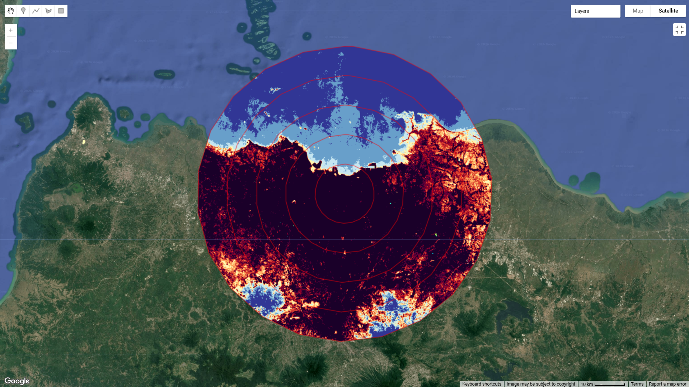
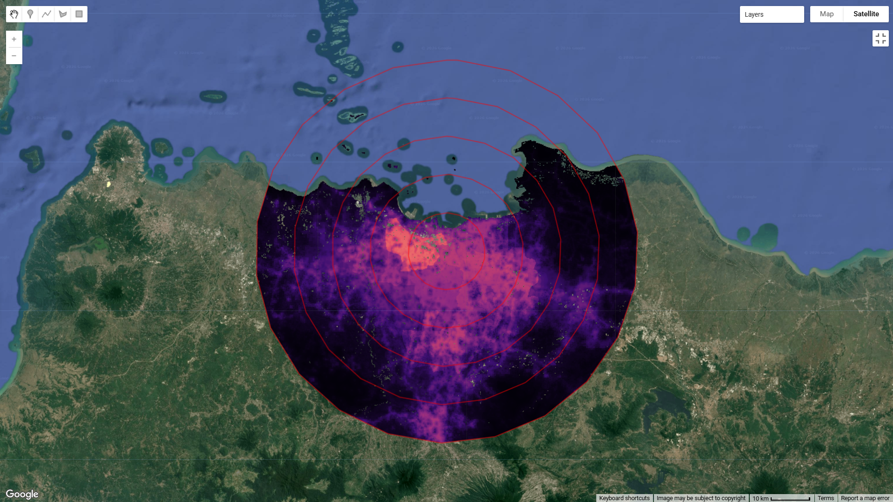
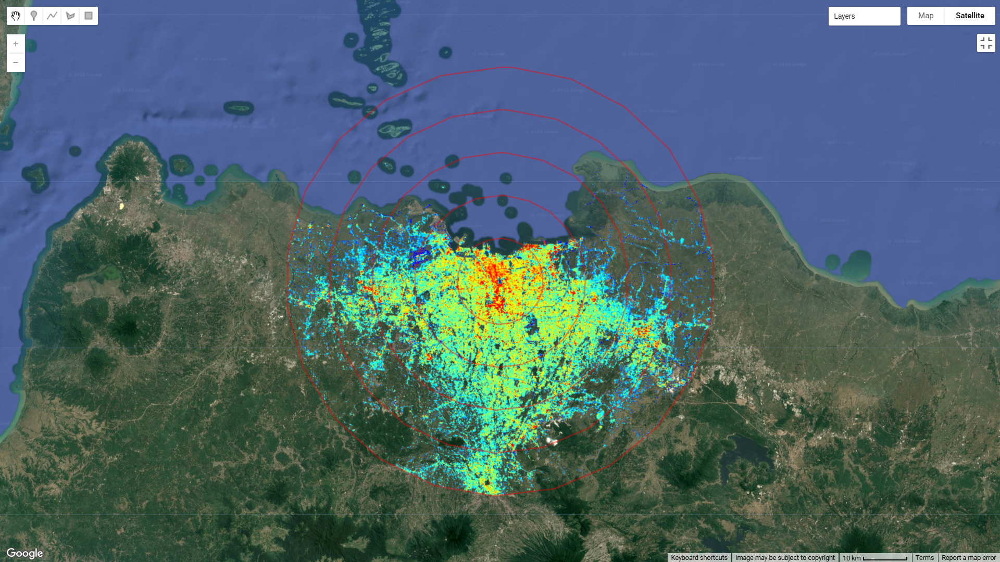
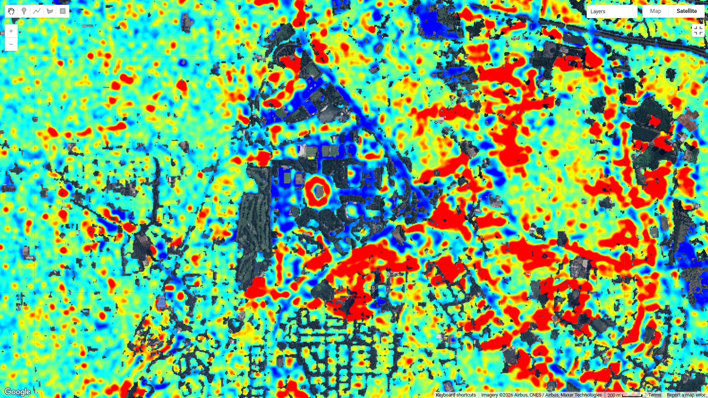
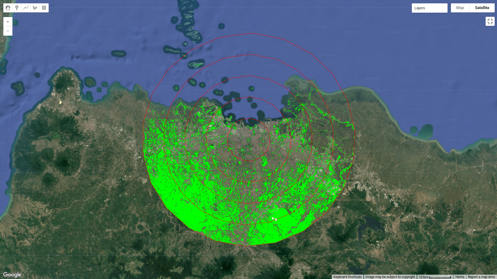

Unequal Shelter in a Warming City: A Brief Notes on Urban Heat Adaptation in Jakarta
A few days ago, I was reading a paper on climate adaptation in urban environments. It explored how climate shelters are distributed across cities and whether their availability actually aligns with socioeconomic status and social vulnerability.
The findings were quite significant and became the basis for the direction of future urban design policies.
Even though these shelters appeared evenly distributed at first glance, areas with more vulnerable populations—like neighborhoods with many elderly residents or lower-income groups—actually had much less access compared to wealthier, well-built districts.
By way, I tried to understand how the situation looks in the most influential city in Indonesia: if a similar pattern exists in Jakarta, where are the actual safe zones from the heat?
This short note doesn't try to give a definitive answer. It's just a preliminary spatial reading using publicly available data proxies. The question is simple: Can building shapes and population density give us a hint about where climate shelter capacity really lies?
How I Looked Into It
To conduct this preliminary analysis, building height and vertical urban concentration were estimated using C-band Synthetic Aperture Radar (SAR) data from Sentinel-1, specifically employing the VV and VH polarization bands as proxies for built-up structures. Population density was derived from the WorldPop dataset with a spatial resolution of 100 meters, providing an estimate of population distribution across the study area. Meanwhile, land surface temperature (LST) was estimated using Landsat imagery to capture the spatial variation of surface thermal conditions. These datasets were integrated to construct a simplified spatial assessment framework intended to explore the relationship between urban heat exposure, population concentration, and potential adaptive environments within the Jakarta metropolitan area.
What the Maps Show






Making Sense of It
From the preliminary spatial analysis conducted above, areas exhibiting higher land surface temperatures (LST) appear to be concentrated within densely populated urban zones in northern Jakarta, particularly near major centers of human activity. In contrast, surrounding buffer regions such as Bekasi and Karawang exhibit relatively lower surface temperatures, while Bogor in the southern part of the metropolitan area appears substantially cooler than the urban core of Jakarta. In terms of population distribution, the highest population densities are concentrated around the city center, northern coastal areas, and locations associated with major economic and social activities. The spatial pattern also suggests outward urban expansion toward the east and southeast corridors, extending toward Bogor in the south and partially toward Tangerang in the west. Furthermore, the SAR-based building height estimation reveals a clear concentration of high-rise structures in central and northern Jakarta, corresponding to major commercial and business districts, including the Sudirman–SCBD corridor and other economic centers. Meanwhile, areas characterized by lower building intensity and greater open or vegetated land cover appear to be distributed farther from the urban core, particularly toward Bogor, Tangerang, and parts of Karawang. By compiling these spatial layers into an exploratory assessment framework, several preliminary observations emerge. Areas with higher population density generally coincide with higher surface temperatures, supported by land surface and land cover characteristics indicating a dominance of built-up environments and concentrated urban activities. At the same time, zones with stronger vertical development may suggest greater access to thermally protected indoor environments. However, further analysis is required before drawing conclusions regarding climate shelter prioritization. Future assessments should incorporate weighted indicators of social vulnerability, including socioeconomic conditions, demographic characteristics, education, and healthcare accessibility. Integrating these dimensions would enable a more robust, data-driven spatial evaluation to identify priority areas for climate shelter planning and urban heat adaptation.
Of course, this doesn't mean every tall building is a public climate shelter. This casual analysis just invites us to think lightly but critically: is a city's ability to 'adapt' becoming concentrated only in very specific spatial pockets?
Closing Reflection
We often judge a city's greatness by how efficiently it grows and builds concrete roads. But amid increasingly frequent extreme weather, another question becomes just as important to ask: Who actually has the access to stay safe and comfortable?
Adaptation, it turns out, isn't just about dropping the numbers on a thermometer. It's also about figuring out who is covered by that protection—and who is left sweltering outside.